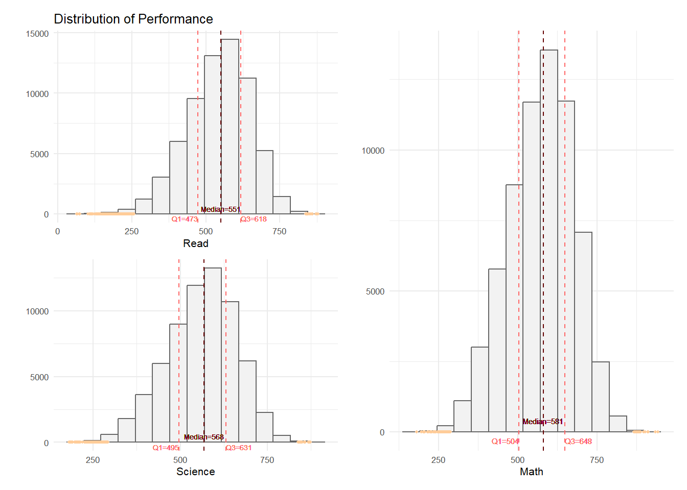
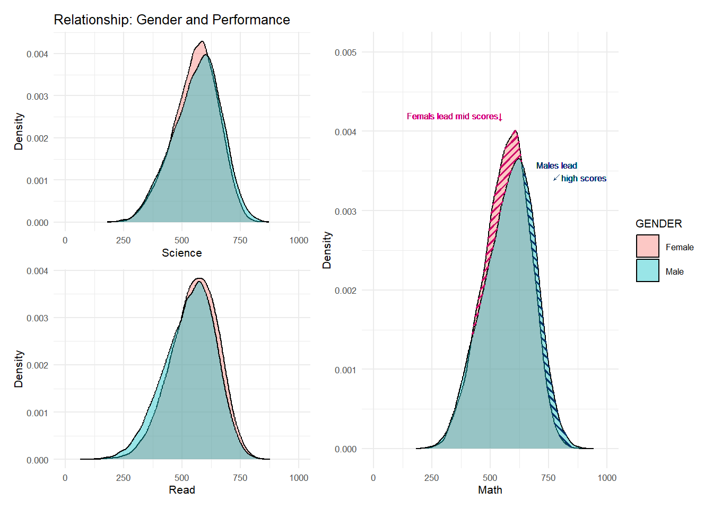
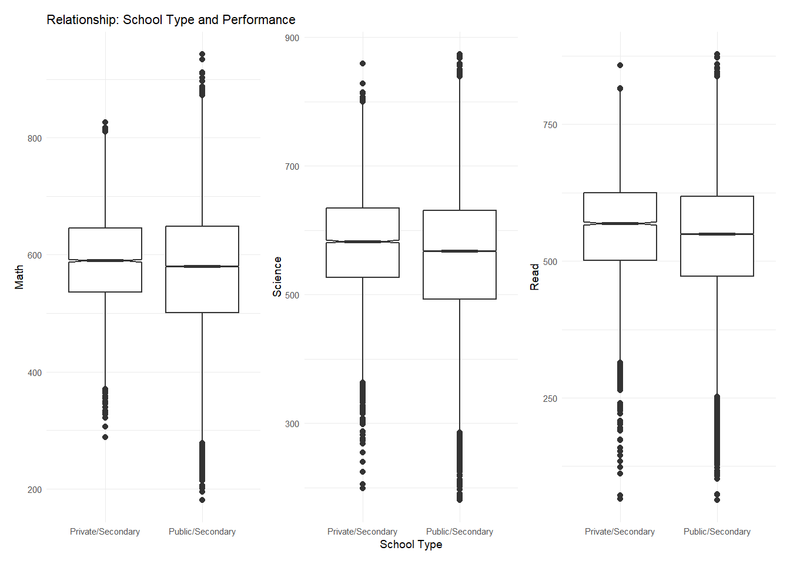
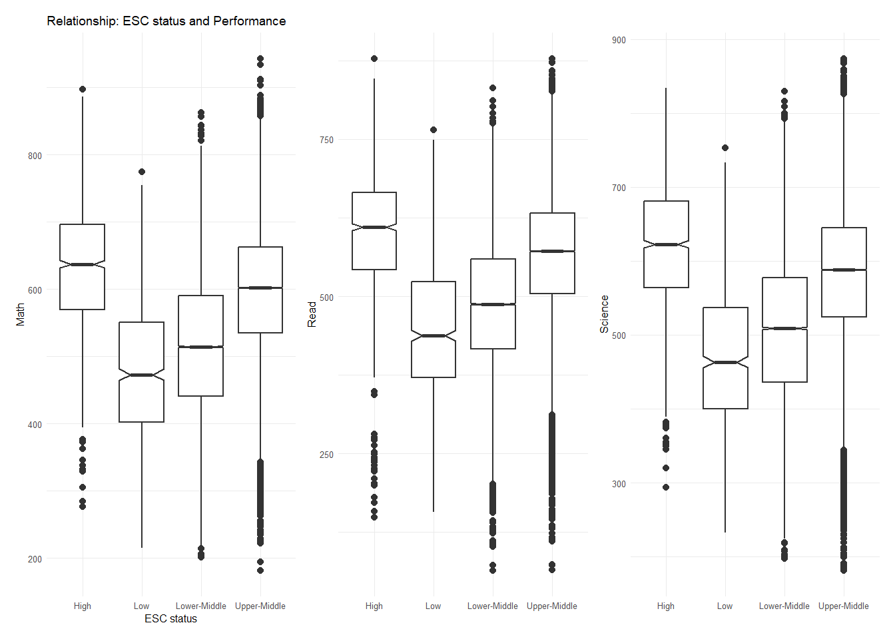

Code
pacman::p_load(ggrepel, patchwork,
ggthemes, hrbrthemes,
tidyverse, haven, ggpattern, ggridges)January 21, 2024
January 21, 2024
Singapore’s education has been praised for achieving high standards without major gaps between rich and poor, as per a BBC report. However, there’s still concern over inequalities among different schools, genders and social groups.
This study aims to dig into the 2022 PISA data to look into how 15-year-old students in Singapore are doing in math, reading, and science. Use EDA and ggplot2 to check out the score distribution and see how it links to school type, gender, and social status.
Use following code chunk to install relating R packages:
In this study, the dataset used is the student questionnaire data file provided from PISA 2022 survey. It contains the personal and school information of 15-year-old students across the world, their responses to the questionnaires, and the assessment assigned by PISA experts to their performance in mathematics, science, and reading based on their answers.
Based on the objectives of this study, which focuses on analyzing the performance of Singaporean students in mathematics, science, and reading, as well as the impact of school, gender, and socioeconomic status on these achievements, the dataset was filtered to retain the following variables for research analysis.
:::{.panel-tabset group=“dataset_overview”}
| Col Name | Label | Used for |
|---|---|---|
| STRATUM | School Type | variable of school type |
| ST004D01T | Gender | variable of gender |
| ESCS | Index of economic, social and cultural status | variable of socioeconomic status |
| PV1MATH-PV10MATH | Performance in Math | variable of performance in Math |
| PV1READ-PV10READ | Performance in Reading | variable of performance in Reading |
| PV1SCIE-PV10SCIE | Performance in Science | variable of performance in Science |
Missing values will have adverse impact on subsequent analysis, so it’s essential to check missing values at the first stage of the study. Use colSums(is.na()) to check if each column has missing value.
CNTSCHID CNTSTUID STRATUM ST004D01T ESCS PV1MATH PV2MATH PV3MATH
0 0 0 0 47 0 0 0
PV4MATH PV5MATH PV6MATH PV7MATH PV8MATH PV9MATH PV10MATH PV1READ
0 0 0 0 0 0 0 0
PV2READ PV3READ PV4READ PV5READ PV6READ PV7READ PV8READ PV9READ
0 0 0 0 0 0 0 0
PV10READ PV1SCIE PV2SCIE PV3SCIE PV4SCIE PV5SCIE PV6SCIE PV7SCIE
0 0 0 0 0 0 0 0
PV8SCIE PV9SCIE PV10SCIE
0 0 0 It turns out that 47 data points in variable “ESCS” are missing, which account for 0.7% of variable “ESCS”. Since the missing percentage is quite small, we can ignore it when analyzing.
According to PISA, PV (plausible value) is the assessment of performance given by experts based on students’ responses to questions. For each subject, experts will give out 10 PVs representing 10 well-picked estimated points draw from a certain distribution which represents the range of ability or score the student might have in one subject. Multiple PVs in one subject can help to reduce the uncertainty of the test measurement. In order to retain the progress experts made, in this study, all 10 original PVs will be taken into account when forming distribution and exploring relationship between performance and school/gender/social status without being averaged.
Based on this consideration, the current wide format need to be converted into long format, so that all the 10 PVs of each subject of each students can be listed in one column and be plotted easily.
Use pivot_longer to convert wide format into long format.
#Convert wide-format into long-format
math_long <- select_df %>%
pivot_longer(
cols = contains("MATH"),
names_to = "MATH",
values_to = "MATH_score"
)
math_long <- math_long %>%
arrange(CNTSCHID, CNTSTUID, STRATUM, ST004D01T, ESCS)
math_long_selected <- select(math_long, -contains("READ"), -contains("SCIE"))
read_long <- select_df %>%
pivot_longer(
cols = contains("READ"),
names_to = "READ",
values_to = "READ_score"
)
read_long <- read_long %>%
arrange(CNTSCHID, CNTSTUID, STRATUM, ST004D01T, ESCS)
read_long_selected <- select(read_long, -contains("MATH"), -contains("SCIE"), -one_of(names(math_long_selected)))
scie_long <- select_df %>%
pivot_longer(
cols = contains("SCIE"),
names_to = "SCIENCE",
values_to = "SCIENCE_score"
)
scie_long <- scie_long %>%
arrange(CNTSCHID, CNTSTUID, STRATUM, ST004D01T, ESCS)
scie_long_selected <- select(scie_long, -contains("MATH"), -contains("READ"), -one_of(names(math_long_selected)))
combined_long_df <- bind_cols(math_long_selected, read_long_selected, scie_long_selected)In PISA report, ESC status is shown as index. For better view on the relationship study, the ESC status will be first converted into percentage according to the min and max index, then will be segmented into 4 groups: 0-25% as Low class, 25%-50% as Lower-middle class, 50%-75% as Upper-middle class, 75%-100% as High class.
For better understanding on each variable, we will change the column names to the ones everyone is easy to read and understand.
Use mutate() to segment values into different groups and change column names.
#translate column names
school_map <- c("SGP01" = "Public/Secondary",
"SGP02" = "Public/Post-secondary",
"SGP03" = "Private/Secondary",
"SGP97" = "Undisclosed")
gender_map <- c("1" = "Female",
"2" = "Male")
clean_df <- combined_long_df %>%
mutate(SCHOOL = school_map[STRATUM],
GENDER = gender_map[ST004D01T],
Math = as.numeric(MATH_score),
Read = as.numeric(READ_score),
Science = as.numeric(SCIENCE_score),
ESC_status = round(((ESCS - min(ESCS, na.rm = TRUE))/
(max(ESCS, na.rm = TRUE)-min(ESCS, na.rm = TRUE)))*100, digits = 0),
ESC_status = case_when(
ESC_status >= 0 & ESC_status < 25 ~ "Low",
ESC_status >= 25 & ESC_status < 50 ~ "Lower-Middle",
ESC_status >= 50 & ESC_status < 75 ~ "Upper-Middle",
ESC_status >= 75 & ESC_status <= 100 ~ "High",
TRUE ~ as.character(ESC_status)
))
#remove columns which are not used to plot
clean_short_df <- clean_df %>%
select(-c(CNTSCHID, STRATUM, ST004D01T, ESCS, MATH_score, READ_score, SCIENCE_score))Use ggplot() and geom_histogram to plot distribution of performance on each subject. In addition, draw lines of median, 1st quantile, 3rd quantile and outliers on each histogram to reveal statistics summary of each distribution.
#Calculate median,Q1,Q3,outliers for Math
median_math <- median(clean_short_df$Math)
quantiles_math <- quantile(clean_short_df$Math, probs = c(0.25, 0.75))
iqr_math <- quantiles_math[2] - quantiles_math[1]
upper_bound_math <- quantiles_math[2] + 1.5 * iqr_math
lower_bound_math <- quantiles_math[1] - 1.5 * iqr_math
outliers_math <- subset(clean_short_df, Math > upper_bound_math | Math < lower_bound_math)
#Calculate median,Q1,Q3,outliers for Read
median_read <- median(clean_short_df$Read)
quantiles_read <- quantile(clean_short_df$Read, probs = c(0.25, 0.75))
iqr_read <- quantiles_read[2] - quantiles_read[1]
upper_bound_read <- quantiles_read[2] + 1.5 * iqr_read
lower_bound_read <- quantiles_read[1] - 1.5 * iqr_read
outliers_read <- subset(clean_short_df, Read > upper_bound_read | Read < lower_bound_read)
#Calculate median,Q1,Q3,outliers for Science
median_science <- median(clean_short_df$Science)
quantiles_science <- quantile(clean_short_df$Science, probs = c(0.25, 0.75))
iqr_science <- quantiles_science[2] - quantiles_science[1]
upper_bound_science <- quantiles_science[2] + 1.5 * iqr_science
lower_bound_science <- quantiles_science[1] - 1.5 * iqr_science
outliers_science <- subset(clean_short_df, Science > upper_bound_science | Science < lower_bound_science)
#Plot composite histograms for Math, Read, Science
p1 <- ggplot(data = clean_short_df,
aes(x= Math))+
geom_histogram(bins=15,
color = "grey40",
fill="grey95",
size = 0.5)+
geom_vline(aes(xintercept=median_math),
color=c("#660000"),
size=0.5,
linetype="dashed") +
geom_text(x = median_math,
y = 400,
label = paste("Median=581"),
color = c("#660000"),
size = 2) +
geom_vline(xintercept = quantiles_math,
color = c("#FF6666"),
size = 0.5,
linetype = "dashed") +
geom_text(x = quantiles_math[1],
y = -300,
label = paste("Q1=504"),
hjust = 1,
color = c("#FF6666"),
size = 2) +
geom_text(x = quantiles_math[2],
y = -300,
label = paste("Q3=648"),
hjust = 0,
color = c("#FF6666"),
size = 2) +
geom_point(data = outliers_math,
aes(x = Math, y = 0),
color = c("#FFCC99"),
size = 0.8)+
ylab("")+
theme_minimal(base_size=8)
p2 <- ggplot(data = clean_short_df,
aes(x= Read))+
geom_histogram(bins=15,
color = "grey40",
fill="grey95",
size = 0.5)+
geom_vline(aes(xintercept=median_read),
color=c("#660000"),
size=0.5,
linetype="dashed") +
geom_text(x = median_read,
y = 450,
label = paste("Median=551"),
color = c("#660000"),
size = 1.8) +
geom_vline(xintercept = quantiles_read,
color = c("#FF6666"),
size = 0.5,
linetype = "dashed") +
geom_text(x = quantiles_read[1],
y = -350,
label = paste("Q1=473"),
hjust = 1,
color = c("#FF6666"),
size = 1.8) +
geom_text(x = quantiles_read[2],
y = -350,
label = paste("Q3=618"),
hjust = 0,
color = c("#FF6666"),
size = 1.8) +
geom_point(data = outliers_read,
aes(x = Read, y = 0),
color = c("#FFCC99"),
size = 0.8)+
labs(y="",title="Distribution of Performance")+
theme_minimal(base_size=8)
p3 <- ggplot(data = clean_short_df,
aes(x= Science))+
geom_histogram(bins=15,
color = "grey40",
fill="grey95",
size = 0.5)+
geom_vline(aes(xintercept=median_science),
color=c("#660000"),
size=0.5,
linetype="dashed") +
geom_text(x = median_science,
y = 450,
label = paste("Median=568"),
color = c("#660000"),
size = 1.8) +
geom_vline(xintercept = quantiles_science,
color = c("#FF6666"),
size = 0.5,
linetype = "dashed") +
geom_text(x = quantiles_science[1],
y = -350,
label = paste("Q1=495"),
hjust = 1,
color = c("#FF6666"),
size = 1.8) +
geom_text(x = quantiles_science[2],
y = -350,
label = paste("Q3=631"),
hjust = 0,
color = c("#FF6666"),
size = 1.8) +
geom_point(data = outliers_science,
aes(x = Science, y = 0),
color = c("#FFCC99"),
size = 0.8)+
ylab("")+
theme_minimal(base_size=8)
(p2/p3)|p1
Performance of most students in three subjects is all around 600 (max score is 1000).
Most students performance well in math, followed by science, then reading.
All the distribution of performance shows relatively normal, without significant skewness.
Use ggplot() and geom_density to plot distribution of performance on each subject in terms of gender.
##Gender and Subject
#1. Math
#1.1 Create two ribbon areas for Math
female_dens_math_1 <- density(clean_short_df$Math[clean_short_df$GENDER == "Female"], from = 420, to = 635, n = 512)
male_dens_math_1 <- density(clean_short_df$Math[clean_short_df$GENDER == "Male"], from = 420, to = 635, n = 512)
ribbon_data_1 <- data.frame(
x = female_dens_math_1$x,
ymin = pmin(female_dens_math_1$y, male_dens_math_1$y),
ymax = pmax(female_dens_math_1$y, male_dens_math_1$y)
)
female_dens_math_2 <- density(clean_short_df$Math[clean_short_df$GENDER == "Female"], from = 640, to = 850, n = 512)
male_dens_math_2 <- density(clean_short_df$Math[clean_short_df$GENDER == "Male"], from = 640, to = 850, n = 512)
ribbon_data_2 <- data.frame(
x = female_dens_math_2$x,
ymin = pmin(male_dens_math_2$y, female_dens_math_2$y),
ymax = pmax(male_dens_math_2$y, female_dens_math_2$y)
)
#1.2 Plot density graph with marked ribbon areas for Math
p4 <- ggplot(data = clean_short_df,
aes(x = Math,
fill = GENDER)) +
geom_density(alpha=0.4) +
coord_cartesian(xlim = c(0, 1000), ylim = c(0, 0.005)) +
labs(y = "Density", x = "Math") +
theme_minimal(base_size = 8) +
geom_ribbon_pattern(data = subset(ribbon_data_1, x >= 420 & x <= 635),
aes(x = x, ymin = ymin, ymax = ymax),
pattern = 'stripe', pattern_angle = 45, pattern_density = 0.1,
pattern_spacing = 0.02, pattern_key_scale_factor = 0.5,
fill = "orange",alpha=0.01, pattern_colour =c("#CC0066"))+
geom_text(aes(x = 350,
y = 0.0042,
label = "Femals lead mid scores↓"),
color = c("#CC0066"),
angle = 0,
vjust = 0.5,
size = 2.2)+
geom_ribbon_pattern(data = subset(ribbon_data_2, x >= 640 & x <= 850),
aes(x = x, ymin = ymin, ymax = ymax),
pattern = 'stripe', pattern_angle = 135, pattern_density = 0.1,
pattern_spacing = 0.02, pattern_key_scale_factor = 0.5,
fill = "orange",alpha=0.01, pattern_colour =c("#003366"))+
geom_text(aes(x = 790,
y = 0.0035,
label = "Males lead
↙high scores"),
color = c("#003366"),
angle = 0,
vjust = 0.5,
size = 2.2)
#2. Science
p5 <- ggplot(data = clean_short_df,
aes(x = Science,
fill = GENDER)) +
geom_density(alpha=0.4) +
coord_cartesian(xlim = c(0, 1000)) +
labs(y = "Density", x = "Science", title = "Relationship: Gender and Performance") +
theme_minimal(base_size = 8) +
theme(legend.position = "none")
#3. Read
p6 <- ggplot(data = clean_short_df,
aes(x = Read,
fill = GENDER)) +
geom_density(alpha=0.4) +
coord_cartesian(xlim = c(0, 1000)) +
labs(y = "Density", x = "Read") +
theme_minimal(base_size = 8)+
theme(legend.position = "none")
(p5/p6)|p4
Among all subjects, performance of females is all above males in mid scores.
For math and science, males perform better in high scores than females.
For reading, females perform better in high scores than males.
Males tend to be good at science, while females are good at arts.
Use ggplot() and geom_boxplot to plot statistics summary of performance on each subject in terms of school types.
##School and Subject
p7 <- ggplot(data = clean_short_df,
aes(y = Math,
x= SCHOOL)) +
geom_boxplot(notch=TRUE)+
theme_minimal(base_size=7)+
labs(x="",title="Relationship: School Type and Performance")
p8 <- ggplot(data = clean_short_df,
aes(y = Science,
x= SCHOOL)) +
geom_boxplot(notch=TRUE)+
theme_minimal(base_size=7)+
labs(x="School Type")
p9 <- ggplot(data = clean_short_df,
aes(y = Read,
x= SCHOOL)) +
geom_boxplot(notch=TRUE)+
theme_minimal(base_size=7)+
labs(x="")
p7+p8+p9
On average, students from private school perform better than those from public school in all the subjects.
Students from public school show a greater level of difference on performance than those from private school.
Private school tend to have better teaching quality.
Use ggplot() and geom_boxplot to plot statistics summary of performance on each subject in terms of socioeconomic status.
Previously in data overview stage, it’s found that ESC_status variable has 47 missing data point. Since the missing percentage is rather small, we will ignore the missing in this analysis stage. Use na.omit() to ignore missing data.
##ESC Status and Subject
p10<-ggplot(data = na.omit(clean_short_df),
aes(y = Math,
x= ESC_status)) +
geom_boxplot(notch=TRUE)+
theme_minimal(base_size=6)+
labs(x="ESC status", title="Relationship: ESC status and Performance")
p11<-ggplot(data = na.omit(clean_short_df),
aes(y = Read,
x= ESC_status)) +
geom_boxplot(notch=TRUE)+
theme_minimal(base_size=6)+
labs(x="")
p12<-ggplot(data = na.omit(clean_short_df),
aes(y = Science,
x= ESC_status)) +
geom_boxplot(notch=TRUE)+
theme_minimal(base_size=6)+
labs(x="")
p10+p11+p12
Students from high class perform significantly well among those from other 3 classes.
Students from upper-middle class are ranked in the second place, followed by lower-middle class, then low class.
Students from a higher class tend to perform better in all subjects.
Since this study relies on only one dataset, it’s important to acknowledge some limitations:
Temporal Specificity: The data is specific to the year 2022 and may not represent the current and long-term tendency occurred or after this period. Therefore, the findings are limited to this specific year.
Sampling Bias: PISA collected data from a sample of 15-year-old students, which may not represent all the population of students in Singapore. Therefore, this could influence the generalizability of the results to all students.
Variable selection: The analysis is based on selected variables related to student performance, school, gender and ESC status. Other potentially relevant factors may not be included in the dataset.
After applying the exploratory data analysis methods to the dataset, there are several insights gained from it which may arouse the attention to the governers and the public of Singapore: